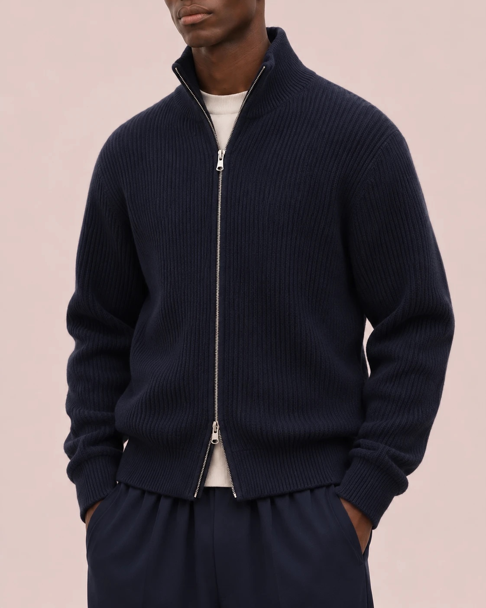

Story
Minder stukken, beter gemaakt.
GAUGE is genoemd naar de maat van het breiwerk: het aantal steken per centimeter. Het is het eerste wat we bepalen en het laatste wat je ziet — en het verschil tussen een trui die je één seizoen draagt en een die blijft.
We maken een kleine garderobe van gebreide stukken en rustige basics, in kleuren die bij elkaar passen. Geen logo's op de borst, geen haast. Alleen vorm, garen en afwerking.
